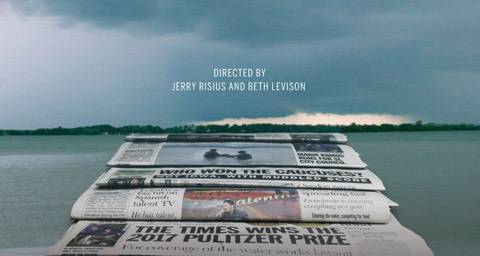

Panel · Double Exposure 2021
Local Journalism: of Deserts and Regrowth
Friday, October 15, 2021 · 3:15pm–4:45pm
“All journalism is local” goes the old saw, but if so, then all journalism is in trouble. In the last seventeen years, a quarter of all American newspapers have gone under, with local papers in small communities disappearing fastest. With them goes accountability. Where once there were vital avenues for reasoned public debate, there are now news deserts, lacking any ongoing press presence. The Storm Lake Times, captured in the acclaimed new film Storm Lake, is a holdout, a paper in rural Iowa that swings between modest profit and debt. Foundations are rushing in to prop up local coverage, with initiatives like the Germantown Info Hub, the Documenters, Outlier Media, El Tímpano, and others that are modeling new ways of rebuilding trust and community engagement in the quest for a sustainable business model. But is it too little too late, or are these experiments the future of grass-roots journalism?
Films discussed

Storm LakeJerry Risius, Beth Levison2021 · 85 min
Sources
Related sessions
- 2026 · Fri Nov 6 · 10:35amPanelYour City Your StoryLois Nembhard, Sonam Vashi, George Kevin Jordan, Noah Kincade, Rachel Mason